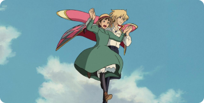

Rédigé par Marina Meloni • 2 min 30 de lecture
Pour ceux qui ont exploré l'univers envoûtant du "Château ambulant" de Hayao Miyazaki, la simple mention du film évoque une douce vague de nostalgie. C'est un périple captivant à travers un royaume où le merveilleux, la magie et l'amour se mêlent harmonieusement, donnant vie à un conte mémorable. Au cœur de cette histoire enchanteresse réside Howl, un sorcier charismatique mais tourmenté, et son propre château ambulant. Sur fond de conflit déchirant le pays, le film nous présente Sophie, une jeune femme dont la vie prend un tournant inattendu lorsqu'elle croise le chemin de Howl et de son énigmatique château. Le château lui-même est un chef-d'œuvre imaginaire : une colossale machine ambulante qui change constamment de forme et d'emplacement. Sa métamorphose reflète l'état d'esprit de son propriétaire, Howl, en faisant une représentation visuelle de ses tourments intérieurs. Cette fusion captivante de magie et de mécanique illustre la capacité de Miyazaki à créer des mondes visuellement éblouissants et profondément émouvants.

Photo tirée du film, Le Château Ambulant sur la colline
Sophie, condamnée à vivre dans le corps d'une femme âgée, se lance dans une quête pour briser sa malédiction et tombe sur le château de Howl. Elle devient sa gouvernante et, par ce biais, tisse un lien unique avec Howl. Le thème de l'amour est habilement entrelacé dans le récit. À mesure que la relation entre Sophie et Howl s'approfondit, les spectateurs prennent conscience que l'amour transcende les apparences et qu'il constitue une force véritablement puissante. Tout au long de l'histoire, nous sommes témoins des conséquences destructrices de la guerre et des effets néfastes de l'utilisation de la magie comme arme. La réticence de Howl à s'impliquer dans le conflit souligne le message sous-jacent du film sur la vacuité de la guerre et l'importance des choix personnels. L'art narratif exceptionnel de Miyazaki transparaît dans chaque image du Château ambulant. Le film capture l'essence de la nostalgie, éveillant un désir pour un monde où la magie demeure prospère et où l'amour triomphe en toutes circonstances. Il témoigne de sa capacité unique à fusionner des éléments fantastiques avec des émotions humaines profondes.
Photo tirée du film, Howl et Sophie.
En bref, "Le château ambulant" n'est pas seulement un film, mais une expérience gravée à jamais dans le cœur de son public. Avec son animation à couper le souffle, ses personnages mémorables et ses thèmes sous-jacents sur l'amour et la guerre, le film continue de captiver autant les nouveaux adeptes que les fans de longue date. Le génie de Miyazaki brille de mille feux dans ce chef-d'œuvre intemporel, laissant en nous une nostalgie pour la magie qu'il est le seul à pouvoir insuffler sur grand écran.
prochain article
À propos
Contact